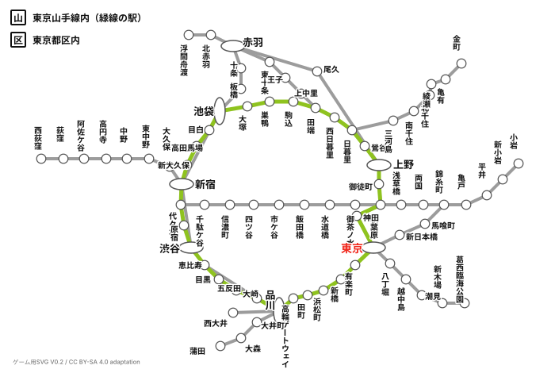

東京コアSVG 再現ラボ
元画像の構造をベクトルへ再構成。V0.4では主要駅と一般駅のラベルを分離。全体表示と詳細表示の切替を検証できます。
Reference

Vector reconstruction

Overlay comparison
Game-ready label test
SVG loading...
Reference: “Tokunai-pass.png”, Highexpress~commonswiki, Wikimedia Commons, CC BY-SA 4.0. SVG is an adapted/redrawn work and is provided under CC BY-SA 4.0. The game UI/code remains separately authored.